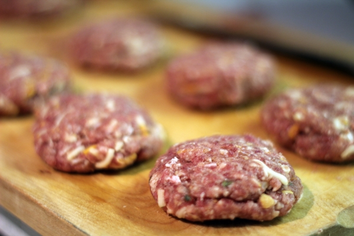

Best Hamburger Ever

The people like to prepare some hamburgers for their kids with the own special ingredients that was created in the USA or another country.
Ingredients
- 1 1/2 pounds lean ground beef
- 1/2 onion, finely chopped
- 1/2 cup shredded Colby Jack or Cheddar cheese
- 1 large egg
- 1 (1 ounce) envelope dry onion soup mix
- 1 clove garlic, minced
- 1 tablespoon garlic powder
- 1 teaspoon soy sauce
- 1 teaspoon Worcestershire sauce
- 1 teaspoon dried basil
- 1 teaspoon dried oregano
- 1/2 teaspoon crushed dried rosemary
- Salt and pepper to taste
Directions
- Gather all ingredients. Preheat an outdoor grill for high heat and lightly oil the grate.
- Meanwhile, combine ground beef, onion, cheese, egg, onion soup mix, minced garlic, garlic powder, soy sauce, Worcetershire sauce, parsley, basil, oregano, rosemary, salt and pepper, in a large bowl.
- Use your hands to form the mixture into 4 patties.

- An instant-read thermometer inserted into the center should read at least 165 degrees F (74 degrees C).